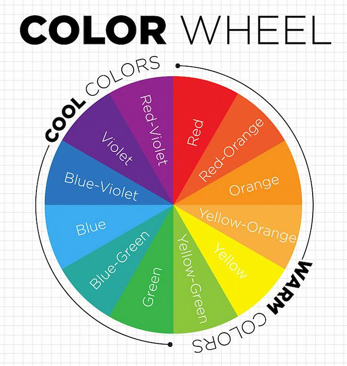
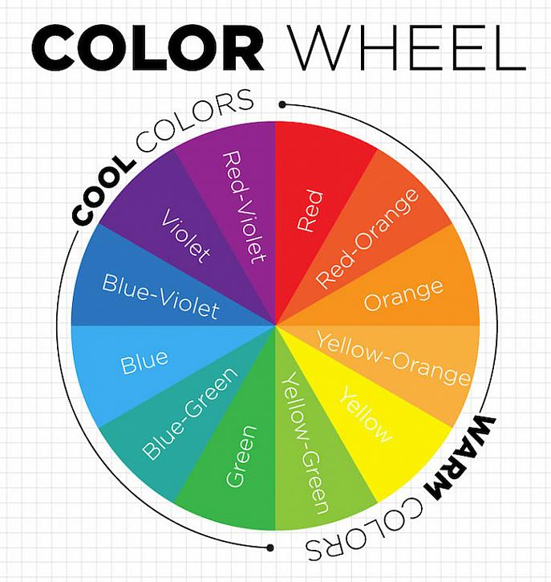

HELLLLLOOOOO
This is some text to show on the page as an example.
Color Theory
The way you use color can dramatically improve the experience users have on your website. Colors without contrast can be hard to read for people with impaired vision.
This is some text to show on the page as an example.
The way you use color can dramatically improve the experience users have on your website. Colors without contrast can be hard to read for people with impaired vision.
